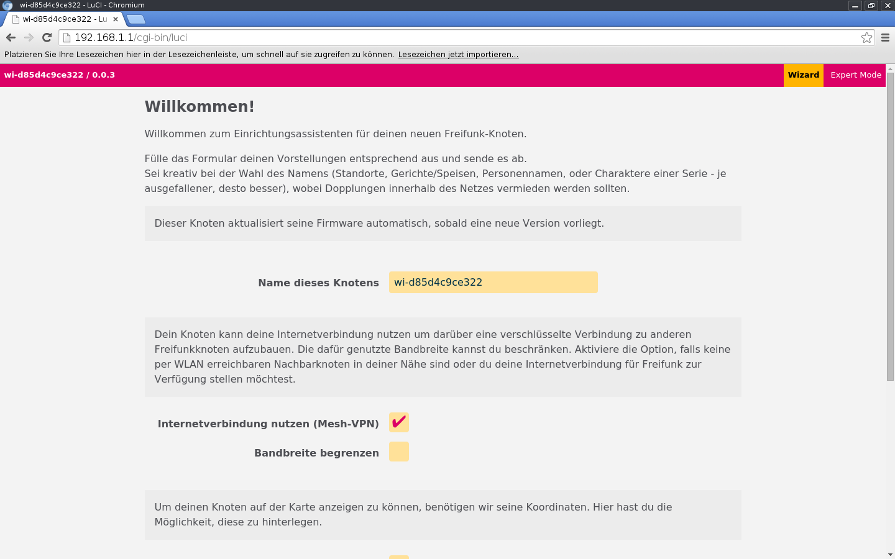
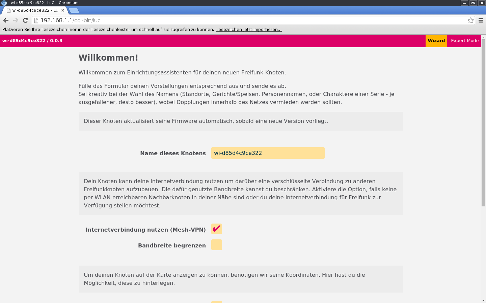
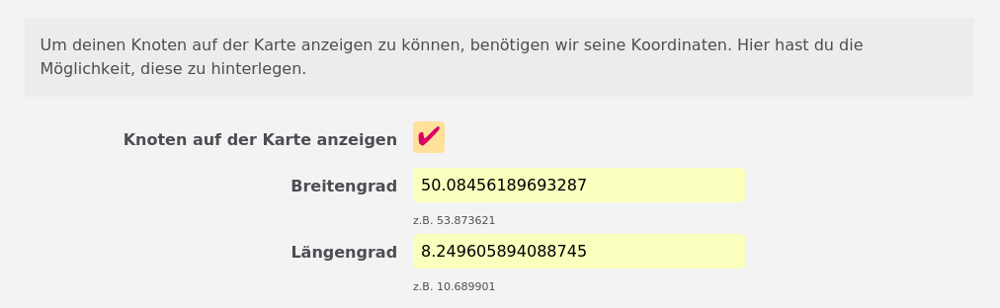
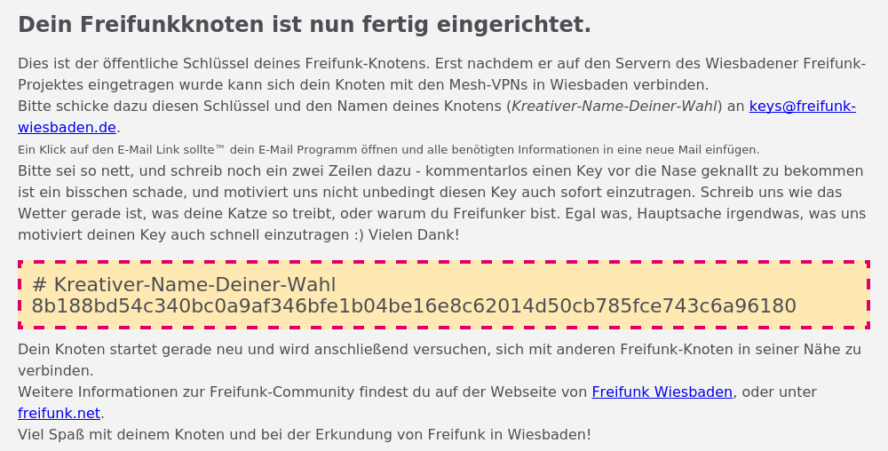

Rufe die folgende URL in einem Browser auf: http://192.168.1.1
 Config-Mode eines Freifunk-Knotens
Hier erfährst du alles Notwendige um deinen eigenen Freifunk-Knoten zu betreiben.
Die Einrichtung eines Freifunk-Knotens ist nicht schwer, das kann jeder! Alle Schritte, vom Router-Kauf über das Firmware-Flashen bis zum fertigen Freifunk-Knoten auf einen Blick:
| Schritt | Beschreibung | Zeitaufwand |
|---|---|---|
| 1 | Router auswählen und kaufen | variiert je nach Verfügbarkeit |
| 2 | Firmware einspielen | ca. 15 Minuten |
| 3 | Knoten einrichten | ca. 5 Minuten |
Rufe die folgende URL in einem Browser auf: http://192.168.1.1
 Config-Mode eines Freifunk-Knotens
Als Erstes gibst du deinem Knoten einen Namen. Nimm einen, der dir gefällt und der vielleicht ein wenig über den Standort des Knotens aussagt. Bitte beachte, dass keine Sonderzeichen außer der Bindestrich im Namen erlaubt sind. Wenn du ein Leerzeichen brauchst, verwende einen Bindestrich.

Wenn keine anderen Knoten in WLAN Reichweite sind, setze nun einen Haken hinter "Mesh-VPN aktivieren", um eine verschlüsselte Verbindung über deinen Internet-Router zu den Freifunk-Servern herzustellen. Die Freifunk-Server verbinden deinen Freifunk-Knoten über das Internet mit allen anderen Teilen des Freifunk-Netzes, die nicht über WLAN erreicht werden. Wenn diese Option nicht aktiviert wird kann dein Knoten nur über einen weiteren Freifunk Knoten, der in WLAN Reichweite steht, eine Verbindung zum Freifunk-Netz aufbauen. Der Zugang zum Internet ist dann nur möglich, wenn mindestens bei einem der erreichbaren Knoten diese Option aktiviert ist.

Optional kannst du die Bandbreite, die von deinem Internet-Anschluss maximal benutzt werden soll, fest limitieren. Willst du die Bandbreit limitieren, setze den Haken "Mesh-VPN Bandbreite begrenzen" und trage in die beiden Felder darunter die gewünschten Limits ein. Die Minimalwerte sind 1000 im oberen und 100 im unteren Feld.
Wenn du möchtest, dass du und andere Mitmenschen den Standort deines Knotens in der Freifunk-Karte sehen können, dann musst du hier ein Häkchen setzen und in die rot unterlegten Felder Geo-Koordinaten eintragen. Die erforderlichen Werte für den Breiten- und Längengrad kannst du auf unserer Freifunk-Karte mit Hilfe des Stecknadel Buttons ermitteln. Die Geo-Koordinaten werden dir in einem kleinen Popup-Fenster angezeigt.

Um einen Knoten-Betreiber erreichen zu können, braucht die Gemeinschaft eine Kontakt-Möglichkeit. Du kannst dazu in diesem Feld beispielsweise eine E-Mail Adresse eintragen oder einen Namen, der dir von anderen aktiven Freifunkern zugeordnet werden kann. Beachte, dass die Kontaktdaten, die du hier eingibts, öffentlich zugänglich sind. Wenn Du magst, kannst du hier mehrere Werte eintragen. Trenne diese bitte mit einem Komma. Wenn du unsicher bist, dann lass dieses Feld leer. Du kannst das später noch ändern.

Klicke auf Speichern & Neustarten.

Die nun erscheinende Seite fasst zusammen, was du als Nächstes tun solltest. Hast du in Schritt 3 das Mesh-VPN aktiviert, zeigt die Seite wie in der Abbildung einen eingerahmten Block an, welcher deinen Knoten Namen und einen VPN-Schlüssel enthält. Sende den Inhalt dieses Blocks an {{ site.community.mail_keys }}. Wenn du auf die als Link angezeigte E-Mail Adresse klickst öffnet sich automatisch dein E-Mail Programm mit einer neuen E-Mail, die alle erforderlichen Werte schon vorausgefüllt hat.
Es kann eine Weile dauern, bis dein Knoten die Verbindung zum Freifunk-Netz aufbaut, da der Schlüssel manuell eingetragen werden muss.
Hast du Mesh-VPN nicht aktiviert, werden diese Daten nicht angezeigt und du brauchst keine Mail versenden. Wenn du möchtest, kannst du dich und deinen neuen Knoten aber trotzdem gerne auf unserer Mailingliste {{ site.community.mail_discussion }} bekannt machen.

Nun kannst du den Knoten ans Internet anschließen. Dazu musst du das LAN-Kabel auf der Rückseite deines Knoten umstecken: Bisher hattest du das Kabel im LAN-Port (gelb). Jetzt muss es in den WAN-Port (blau). Verbinde dann noch das andere Ende des Kabels mit deinem Internet-Router und dein neuer Freifunk-Knoten ist am Netz.

Wie unter Schritt 6 schon beschrieben brauchst du deinen Freifunk-Knoten nicht mit deinem Internet-Router zu verbinden, wenn du ihn als "Mesh-Only Knoten" betreiben willst. Du hast z.B. schon einen Freifunk-Knoten, der mit deinem Internet-Router verbunden ist und möchtest das Freifunk Signal erweitern.
Solltest du Fragen oder Probleme haben, kannst du dich gerne an uns wenden. Kontakt-Möglichkeiten sind ganz unten auf dieser Seite zu finden.